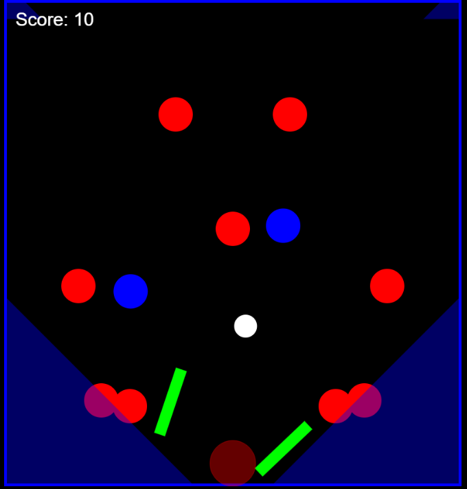
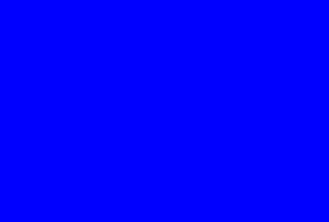
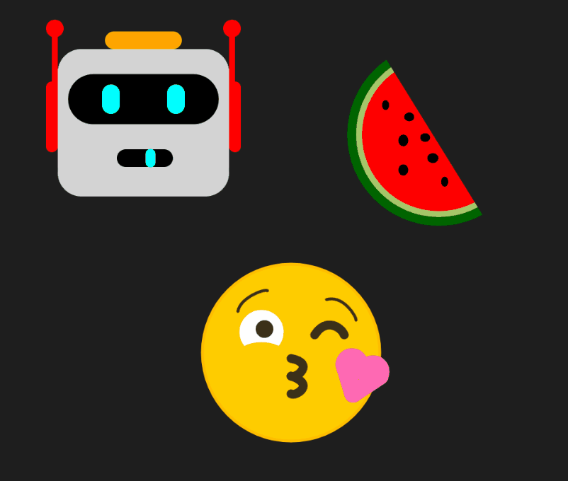
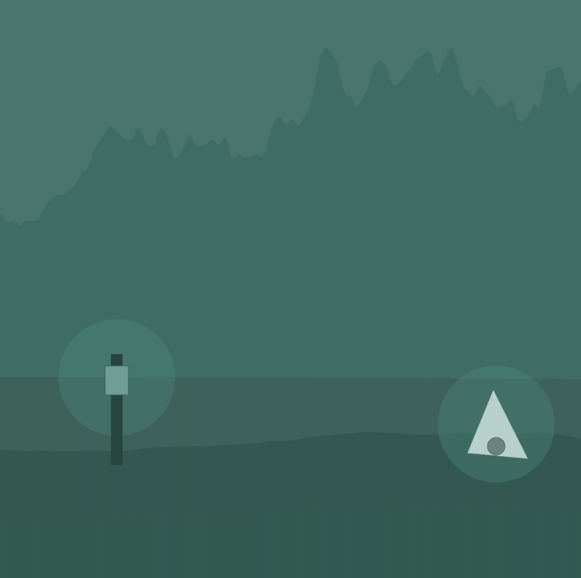
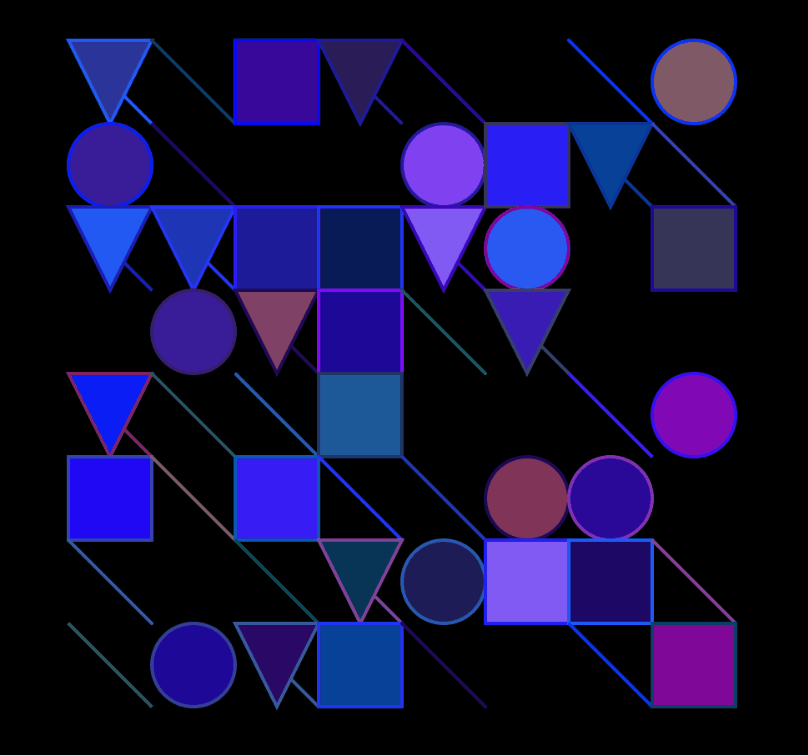
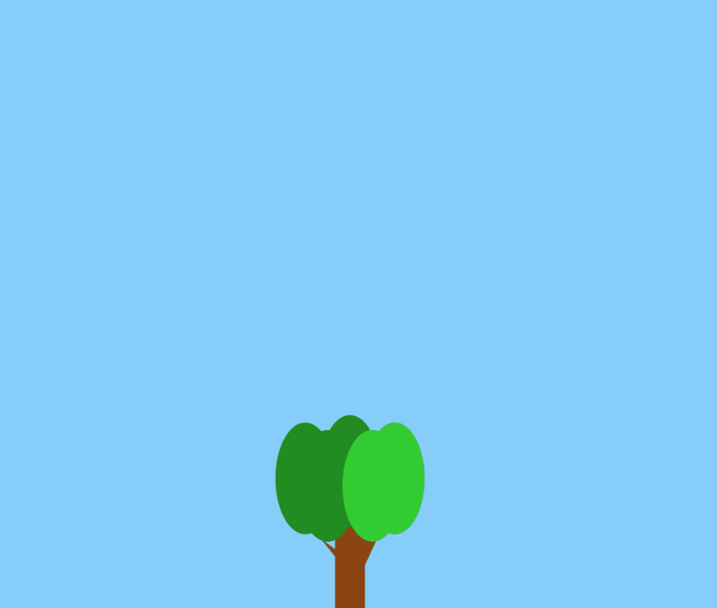

Sean Slevin
This website is a collection of my best work from a coding course, during this class we made poety, animation, random generation and more. I would love to share with you my experiences and learning through this page.
v Below are some of my favorite projects from the course Creative Coding v
!Pinball Machine!

This is a image from my final project.
I made a pinball machine game because I have sentement with the object, and wanted to display it artisticly and functionially in my code.
LINK
!Ripple Clicker!

This is a Gif from an animated assignment.
I made a pond background with a function ripple mechanic with your mouse
LINK
!Drawing in Code!

This is a Gif from an animated assignment.
I made a a couple emojis, one with a function thats an animated mouth
LINK
!Generated Cave!

This is a gif from a project I made in my creative coding class.
I made a randomly generated terrain for a cave with noise functions and lerp color, it can also be seen as a forest in green!
LINK
!Purple Grid Mashup!

This is a gif from a project I made in my creative coding class.
This is a random grid generator. I used a set of colors pleasing to the eye.
LINK
!Seasons of a Tree Hourly!

This is a Gif from a project I made in creative coding class.
The tree is animated in real time, hourly changing the sunset. Every six hours it changes seasons!
LINK